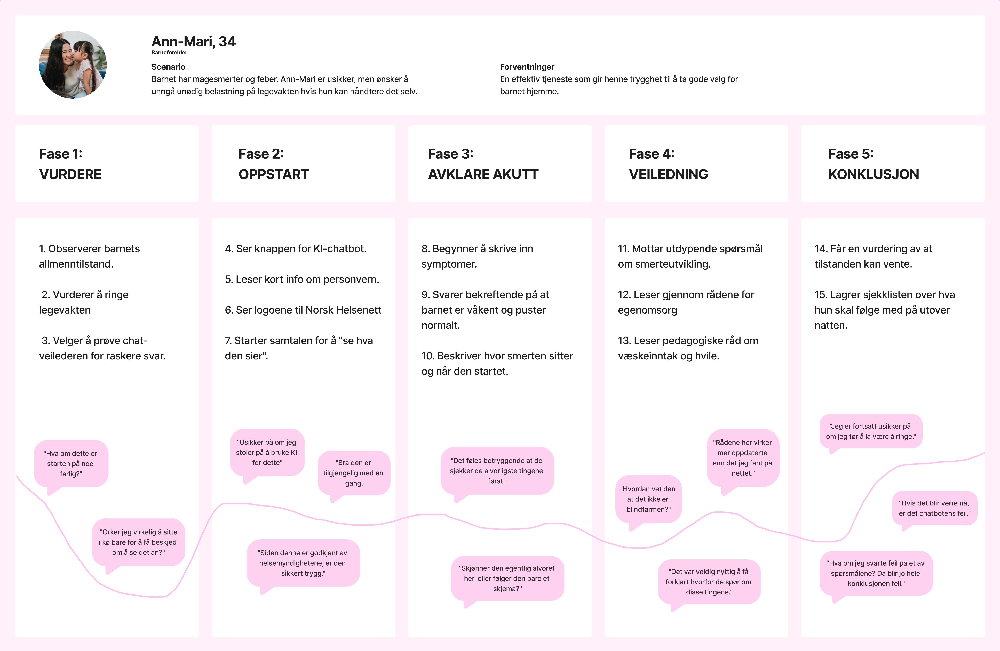
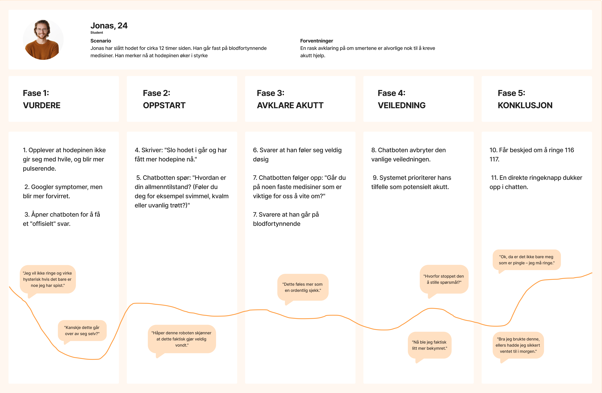
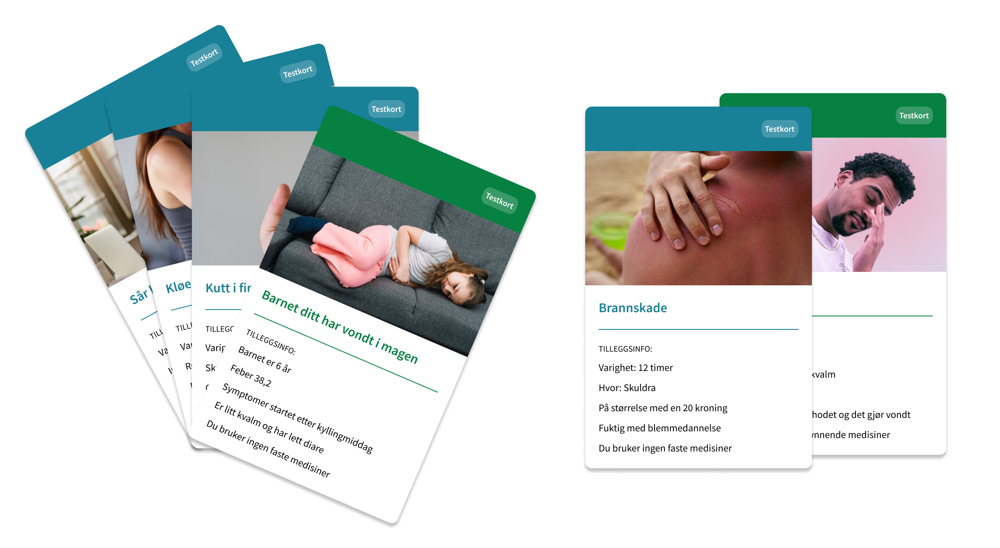
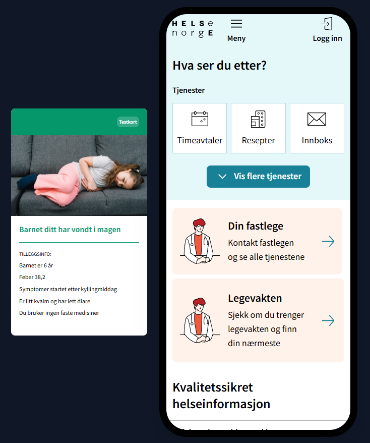
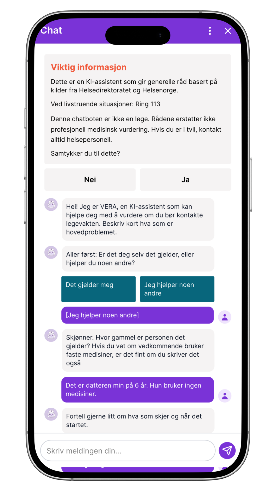
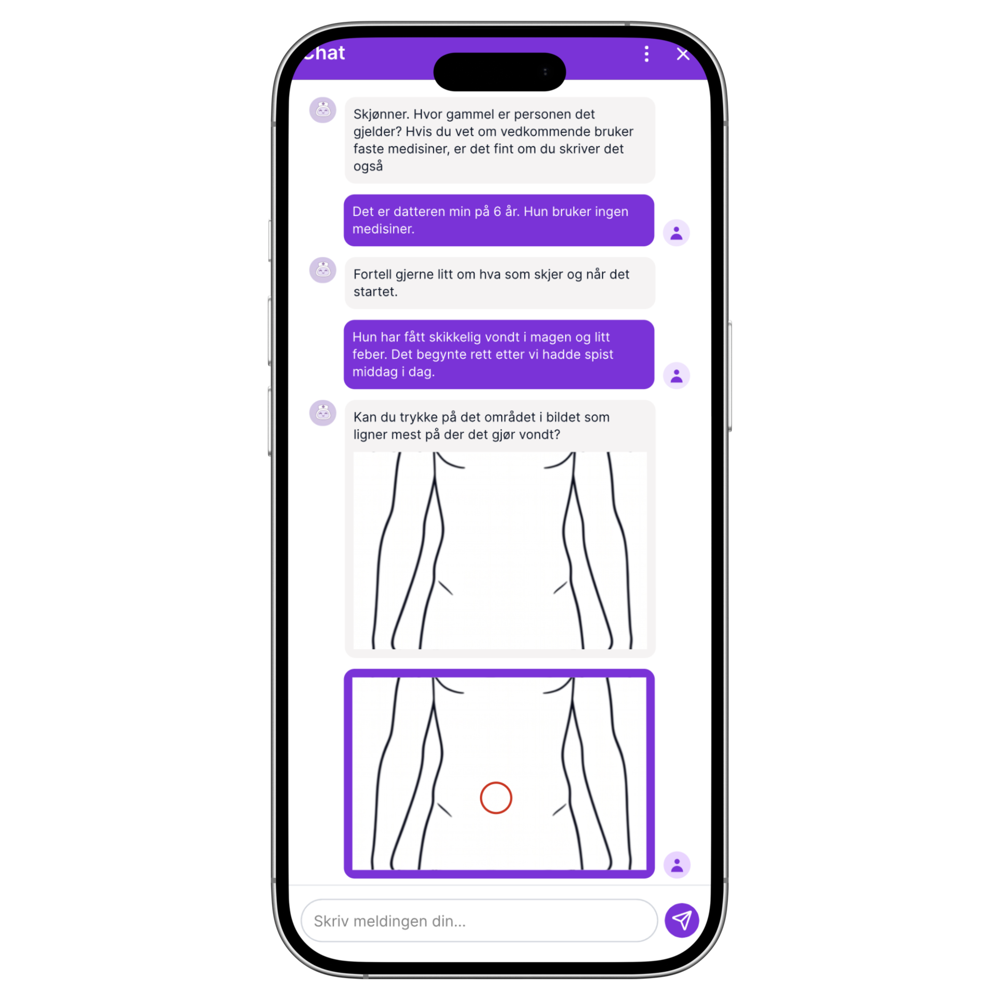
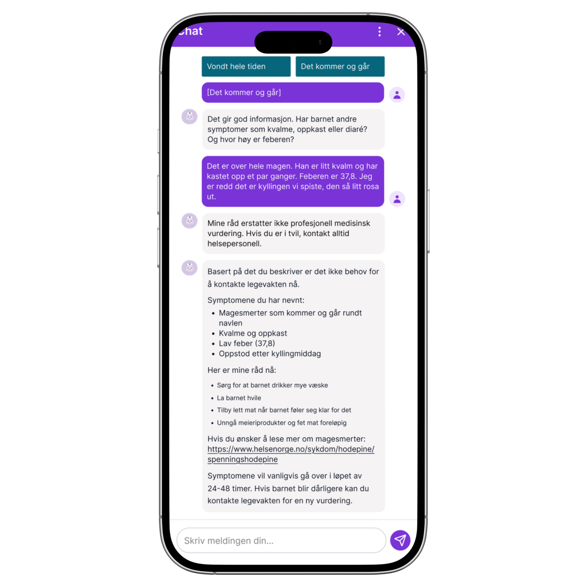

Designprosessen
Gjennom prosjektet hadde jeg delt ansvar for innsiktsarbeidet og utviklingen av konseptet. Da vi gikk over i den siste fasen, hadde jeg hovedansvaret for å designe komponentene, sette opp prototypen og lage brukertestene. Vi brukte Double Diamond som rammeverk. Det tvang oss til å ikke hoppe rett på løsningen, men tørre å stå i problemområdet lenge nok til at vi forsto det faktiske behovet til brukeren.

Discover
Prosjektet tok utgangspunkt i en problemstilling av Norsk Helsenett, som opprinnelig fokuserte på digital innsjekk på legevakten. I innsiktsfasen oppdaget vi imidlertid at de største smertepunktene lå et annet sted. Brukerne var ofte usikre på om de i det hele tatt trengte å bruke legevakten. Dette gjorde at vi endret fokus fra logistikk til å hjelpe folk med å vurdere egen situasjon selv.
Intervju og undersøkelser
For å forstå utfordringene ved legevakten, kombinerte vi kvalitative intervjuer med en kvantitativ undersøkelse. Vi snakket med helsepersonell for å forstå deres hverdag og smertepunkter, samtidig gjennomførte vi en spørreundersøkelse blant brukerne for å kartlegge deres behov. Dataene viste at brukere ofte står i situasjoner der de blir usikre på om egne symptomer er alvorlig nok. Det som for helsepersonell kan fremstå som en ufarlig tilstand, kan for brukeren oppleves som en intens og skremmende smerte.

Utfordringer oppstår når pasienter ringer for å få en avklaring, men ender opp med å føle seg avvist fordi deres egen opplevelse ikke samsvarer med den medisinske vurderingen. Denne innsikten gjorde tillit til en sentral faktor i det videre designarbeidet. Gjennom undersøkelsene så vi en tydelig skepsis til bruk av kunstig intelligens i helsesammenheng, spesielt hvis teknologien fremstår som upersonlig eller vanskelig å forstå. For at en digital tjeneste skal kunne avlaste legevakten, må den ikke bare gi korrekte svar, men også møte brukeren med tydelighet som skaper den nødvendige tryggheten i en sårbar situasjon.
Define
For å systematisere funnene brukte vi et affintydiagram, og videre brukte vi et mulighetstre for å koble brukerbehov til mulige løsninger. Gjennom dette arbeidet ble det tydelig at usikkerhet var en gjennomgående faktor og at brukerne manglet ikke nødvendigvis informasjon, men trygghet. Bilde er ment for å vise at flere løsninger (de grønne) kan løse ulike problemområder.

Persona
Basert på funnene våre utviklet vi to personas som representerte en som trenger å ringe legevakten og en som kan vente.


Jeg utarbeidet en brukerreise for å visualisere hele prosessen brukerne går gjennom når de snakker med en chatbot, fra de første symptomene oppstår til de får en oppsummering og råd. Denne kartleggingen ble viktig fundament for prototypen og brukertestene våre. De ble også brukt som utgangspunkt for testscenarioen våre.


Develop
Helsenorge har et solid designsystem "Frankenstein", men chatboten deres er levert av en tredjepart, som vil si at designet for den ikke lå i designsystemet. Jeg måtte derfor laget et eget komponentbibliotek i Figma. Utfordringen var å skape noe nytt som samtidig føltes som en naturlig del av Helsenorges visuelle profil og krav til universell utforming.
Idéutvikling og konsepter
For å sikre at vi løste de riktige problemene, brukte vi en beslutningsmatrise for å vurdere konseptene våre. Vi testet hver idé mot krav som nytteverdi, brukertillit, sikkerhet og personvern, samt i hvilken grad løsningen kunne avlaste legevakten. Begge konseptene fikk lik poengsum, men vi valgte å gå videre med det som hadde størst potensial for å gi reell nytteverdi for brukere og avlastning for helsepersonell.

Deliver
For å sikre at chatboten ble en trygg og pålitelig assistent, utarbeidet vi et rammeverk for løsningen VERA. Dette fungerte som et oversiktsdokument å definerte alt fra teknisk kildebruk til språklig tonefall.
 VERA er basert på RAG-teknologi (Retrieval-Augmented Generation), som betyr at hun utelukkende henter
informasjon fra kvalitetssikrede kilder som vi har satt til å være Helsenorge sine artikler og
Legevaktindeksen.no. Dette er nødvendig for å skille løsningen fra et vanlig google søk, hvor den henter
informasjon fra hele internett.
VERA er basert på RAG-teknologi (Retrieval-Augmented Generation), som betyr at hun utelukkende henter
informasjon fra kvalitetssikrede kilder som vi har satt til å være Helsenorge sine artikler og
Legevaktindeksen.no. Dette er nødvendig for å skille løsningen fra et vanlig google søk, hvor den henter
informasjon fra hele internett.
Prototyping
For å effektivisere prototypingen brukte jeg Figma Make. Det gjorde det mulig å raskt lage en klikkbar prototype, slik at vi kunne bruke tid til å finpusse den logiske flyten, teksten og de interaktive detaljene.
I prototypen la jeg vekt på et klart språk uten medisinsk sjargong, der VERA anerkjenner brukerens bekymringer uten å virke falsk. Jeg laget også et forslag på logikk for en enkel risikovurdering (triagering), slik at prototypen i brukertestene faktisk kunne gi en troverdig henvisning til enten legevakt eller egenbehandling.
Brukertesting
Under brukertestingen ønsket vi å teste to ting. Den første var hvordan folk kommuniserer i en samtale med chatboten, inkludert hvor mye informasjon de deler uoppfordret. Den andre var for å evaluere det visuelle designet og hvor enkelt det var å finne frem til selve tjenesten på Helsenorge. For å gjennomføre dette på en strukturert måte, utarbeidet vi testkort med ulike scenarioer som ble fargekodet etter formålet med oppgaven.

De grønne kortene ble brukt til å teste selve Figma-prototypen. Siden prototypen var bygget med forhåndsdefinerte svar, var vi avhengige av at testdeltakerne fulgte et bestemt forløp for at samtalen skulle gi mening. Ved å bruke disse kortene som et "manus", kunne vi validere om det visuelle grensesnittet og den planlagte logikken fungerte slik vi hadde tenkt.

For å observere brukernes naturlige språkbruk uten begrensningene i prototypen, brukte vi de blå kortene. Disse inneholdt mer tilfeldige sykdomsforløp og ble brukt i en Wizard of Oz-test. Her satt en fra gruppen skjult og svarte manuelt som chatboten.
Brukertestene ga oss verdifull innsikt i alt fra hvilke ord folk bruker for å beskrive smerte (for eks. "stikkende" vs. "vondt"), til hvor mye informasjon de velger å oppgi frivillig.
Løsningen
Den endelige løsningen er en KI-basert veileder integrert i Helsenorge. Tjenesten fungerer som en tryggere inngangsport enn google, som hjelper brukeren med å vurdere egen situasjon før de eventuelt kontakter legevakten. Under viser et eksempel på en samtale:



Hva har jeg lært fra dette prosjektet
Arbeidet med Norsk Helsenett har vært en skikkelig øyeåpner for hvor komplekst det er å designe tjenester som omhandler helsetjenesten. Jeg vet at vi med dette prosjektet bare har skrapt i overflaten, og det er helt tydelig at det kreves mye mer forskning og testing før en slik løsning er moden for faktisk bruk.
Gjennom prosessen ble det klart at et slikt arbeid involverer utrolig mange parter utenom designere og brukere. Det er mange hensyn å ta når det kommer til nasjonale retningslinjer, personvern og vanskelige etiske dilemmaer. Det har vært spesielt lærerikt å sette seg inn i spørsmålene rundt ansvar, som hvem som egentlig sitter med skylden dersom VERA skulle gi en feilaktig vurdering.
Det har vært interessant å se i praksis hvor mye språket og små visuelle bekreftelser har å si for om folk tørr å stole på teknologien. Til syvende og sist handler det om at mennesket på andre siden av skjermen må føle seg trygg og ivaretatt for at løsningen skal ha en verdi.